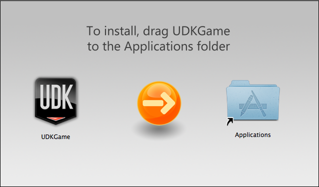
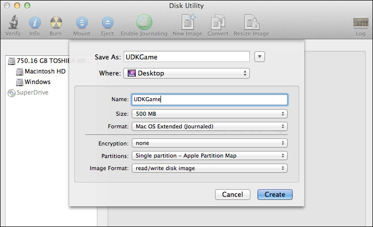
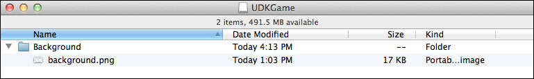
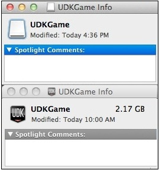

UDN
Search public documentation:
MacInstallerCH
English Translation
日本語訳
한국어
Interested in the Unreal Engine?
Visit the Unreal Technology site.
Looking for jobs and company info?
Check out the Epic games site.
Questions about support via UDN?
Contact the UDN Staff
日本語訳
한국어
Interested in the Unreal Engine?
Visit the Unreal Technology site.
Looking for jobs and company info?
Check out the Epic games site.
Questions about support via UDN?
Contact the UDN Staff
拖拽式 Mac 安装器
概述
需求
/Applications/Utilities 中）以及 Apple 的 Developer Tools（开发者工具） 。您也需要创建一个安装器背景图片。
配备安装器

创建一个可以写入的磁盘图片
- 通过
/Applications/Utilities打开 Disk Utility（磁盘实用程序） 并点击工具栏中的 New Image（新图片） 按钮。

- 它会打开一个其中包含这个新图片的属性的面板。输入名称，为您的游戏选择足够大的尺寸，然后从 Partitions（分区） 下拉框中选择 单独分区 - Apple 分区映射 。然后点击 Create（创建） 按钮。

- Disk Utility（磁盘实用程序） 现在将会创建并安装您的新磁盘图片。
背景图片
- 打开在 Finder（查找器） 中最新安装的文卷并在其中创建一个名为
Background的文件夹。然后将您的背景图片复制到这个 Background 文件夹。

- 现在，确保在 Finder（查找器） 中选择了包含安装文卷的窗口，并且这个窗口使用的是图标视图，然后按下 Command + J 打开这个窗口的属性。

- 在这个窗口的 Background（背景） 部分，选择 Picture（图片） ，然后将您的背景图片拖到图片区域。主要窗口现在应该可以正确地显示您的背景图片。
- 要隐藏 Background 文件夹，您需要打开 Terminal（终端） 应用程序并使用下面的命令： 在我们的实例中将会是：
/Developer/Tools/SetFile -a V /Volumes/Your_Volume_Name/background
/Developer/Tools/SetFile -a V /Volumes/UDKGame/background
游戏和应用程序图标
- 将您的游戏拖到您的安装器安装文卷。然后在 Finder（查找器） 中打开您的启动盘并创建一个
Applications文件夹的别名：- 选择这个文件夹。
- 从 File（文件） 菜单中选择 Make Alias（创建别名） 。它将会创建“Applications alias（应用程序别名）”文件。
- 将这个文件拖到安装器文卷并重新命名为“Applications（应用程序）”。
- 现在再次打开窗口的属性 (Command + J) 并在需要的时候调整 Icons Size（图标尺寸） ，调整图标的位置和窗口的大小使其与背景图片相符。
磁盘图片图标
- 要更改磁盘图片的图标，请在您的桌面上选择安装文卷图标然后按下 Command + I 打开信息窗口。对您的游戏图标进行相同的操作。

- 在最近打开的信息窗口中点击游戏的图标选择它并按下 Command + C 进行复制。
- 切换到文卷的信息窗口，在其中选择它的图标，然后按下 Command + V 粘贴。
- 安装文卷现在应该与游戏具有相同的图标。
转换磁盘图片
- 返回到 Disk Utility（磁盘实用程序） 中，卸载安装器的磁盘图片，然后在选择了磁盘图片后点击 Convert（转换） 按钮。确保您选择 Compressed Image Format（压缩的图片格式） ，然后点击 Save（保存） 。在您选择不为压缩图片使用不同的名称的情况下您可能需要确认替换以前的文件。

- 就这么简单。只要 Disk Utility（磁盘实用程序）完成转换后，您就会有一个合适的拖拽式安装器可供分配。
下载
- background.png - 示例背景图片